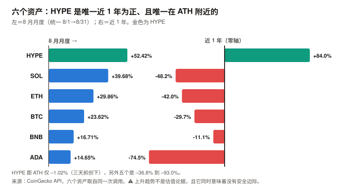

HYPE / Hyperliquid 完整调研与分析报告
编写日期：2026 年 9 月 6 日
数据截止：2026 年 9 月 6 日（8 月完整月度数据已闭合）
研究方法：沿用本系列前五期框架（BTC / ETH / SOL / ADA / BNB）。本期是六期以来第一次覆盖「协议」而非「公链」——Hyperliquid 虽有自建 L1，但其价值几乎全部来自一个永续合约交易所的业务。
本期为 HYPE 首期报告，无上期论点可校验。本期核心发现：
① HYPE 现价 $87.16，市值 $193.8 亿（全球第 10），FDV $832.5 亿。三天前（2026-09-03）刚创下历史最高价 $88.06，现距其仅 –1.02%；
② 它是本系列六个资产里唯一在上涨的：8 月 +52.42%、近 30 日 +57.77%、近 1 年 +83.99%、年初至今 +230.8%。另外五个近 1 年全为负（BTC –29.7% 到 ADA –74.5%）；
③ 协议规模是真实的，且用一手 API 可验证：未平仓合约 $109.53 亿、24 小时名义成交 $29.52 亿（年化约 $1.08 万亿）、233 个永续市场；
④ 归代币持有人的年化收入 $7.096 亿，是全市场第一——第二名 Tron 是 $3.02 亿，Uniswap 是 $1.35 亿。这不是叙事，是 DefiLlama 与 Hyperliquid 官方 API 双源可查的现金流；
⑤ Assistance Fund 已累计销毁 47,024,976 HYPE（约 $41 亿，相当于当前流通盘的 21.1%）——本报告用官方 API 查得余额，并用「上限 − AF 余额 ≈ 总供应量」（误差 0.24%）验证它已被当作销毁扣除；
⑥ 供应侧的问题主要是不透明，而非量级：流通仅占总量 23.3%；回购销毁 64–84 万枚/月 vs 实际解锁 120–175 万枚/月（一手确认的两个观测值），比值 37%–70%。⚠️ 初稿曾称解锁 992 万枚/月、比值 6.4%–8.5%，那个数字是把总额机械平均得出的，已被一手来源推翻（团队明确表示归属非线性）。本期核心判断：HYPE 拥有本系列见过的最强现金流，和最不透明的供应结构。
前者一手可验证、规模全市场第一；后者的问题不是「稀释大」，而是「测不准」——
官方完整归属时间表未公开，且团队明确表示归属非线性；未流通份额中除核心贡献者约 2.37 亿枚外，
其余约 6 亿枚的类别与释放时间表完全未获取。⚠️ 本报告因此不给出目标价，并撤回了初稿的方向性判断。
唯一可靠的估值锚是 FDV 口径：117.3 倍——不依赖流通量假设，且在六个资产里偏低
（BNB 465–699 倍、ETH 约 2,400 倍、TRX 88–103 倍）。⚠️ 本期是六期以来审查改动最大的一次：初稿的核心结论（「年化净稀释 49%」「期望价格 –63%」）
建立在一个虚构的解锁速率上，方向可能相反。详见 11.6。免责声明：本报告不构成任何投资建议。所有分析仅供研究参考，投资决策请咨询专业顾问。
核心结论摘要（一页速览）
| 维度 | 核心判断 |
|---|---|
| HYPE 是什么 | 本系列第一个「协议」而非「公链」标的。 Hyperliquid 是一个永续合约交易所，自建 L1 承载其订单簿。它的价值几乎全部来自交易业务，不来自通用计算需求——分析它更接近分析一家交易所，而不是一条链 |
| 当前价格位置 | $87.16，市值 $193.8 亿（第 10），FDV $832.5 亿。距 ATH 仅 –1.02%，而该 ATH 是三天前创下的 |
| 六个资产里的异类 | 唯一在上涨的：8 月 +52.42%、近 1 年 +83.99%、YTD +230.8%。另外五个近 1 年全为负。本系列此前五个样本方向完全同质，本期是第一个反向样本 |
| 业务规模（一手可验证） | 未平仓合约 $109.53 亿、24h 成交 $29.52 亿（年化约 $1.08 万亿）、233 个永续市场。take rate 约 6.59 个基点 |
| 最强的一项 | 归代币持有人年化收入 $7.096 亿，全市场第一（Tron $3.02 亿、Uniswap $1.35 亿、Aerodrome $0.52 亿）。协议费用的绝大部分通过 Assistance Fund 在公开市场买入 HYPE |
| 最弱的一项 | 供应结构的不透明度。 流通仅占总量 23.3%，而官方完整归属时间表未公开、且归属非线性（一手确认）。修正后的回购/解锁比是 37%–70%（初稿误称 6.4%–8.5%），净供应方向落在 –6% 到 +2% 之间，本报告无法确定 |
| 估值锚 | 与 BNB 同属「回购型」，但资金来源不同：BNB 的销毁来自预留供应（存量，会耗尽），HYPE 的回购来自当期协议收入（流量，业务在就持续）。本报告不主张这是「第六种估值锚」——它是同一种锚的两个实例。主口径为 FDV：117.3 倍 |
| 持有人收益率 | 市值口径 3.66%，FDV 口径 0.85%。对照 BNB 4.20%–4.56%（销毁口径）、Uniswap 3.05%、Tron 0.95% |
| 核心多头逻辑 | 现金流规模全市场第一且一手可验证；take rate 稳定；OI $109.5 亿显示真实深度；AF 已累积 21.1% 流通量的持仓；唯一处于上升趋势的资产 |
| 核心空头逻辑 | 回购吸收不了解锁（6.4%–8.5%）；距 ATH 仅 –1.02%，无安全边际；FDV 口径收益率仅 0.85%；永续 DEX 赛道竞争者已出现（Aster、Lighter）；收入高度依赖交易活跃度，而这是本系列见过最不稳定的需求 |
| 风险等级 | 与前五个不同类。它的风险不是「会不会归零」，而是「极强的业务能不能跑赢一个连规模都测不准的供应释放」。⚠️ 本报告在发布前审查中撤回了初稿的目标价——初稿的 –63% 依赖一个 71% 增量无来源的假设 |
1. Hyperliquid 的起源与设计取舍
1.1 一个不融资的交易所
Hyperliquid 的起点与本系列另外五个资产都不同：它没有向风险投资机构出售过代币。
| 项目 | Hyperliquid 的选择 |
|---|---|
| 融资 | 无 VC 轮次，团队自筹 |
| 代币分配 | 约 31% 通过 2024 年 11 月的空投直接分给用户 |
| 核心贡献者 | 约 23.8%（约 2.38 亿枚），一年 cliff 后线性释放 |
| 上线时间 | 2024 年 11 月 TGE，至今不到两年 |
这个选择解释了它的两个特征：
① 没有 VC 解锁砸盘——但有核心贡献者解锁，而且规模不小（第 5 章的全部内容）；
② 社区认同度极高——空投给用户而非机构，这是它早期增长的重要来源。
1.2 三个技术取舍
① 自建 L1，而不是部署在别人的链上
Hyperliquid 没有选择做以太坊或 Solana 上的应用，而是自建了一条 L1 来承载订单簿。
| 通用 L1（ETH / SOL） | Hyperliquid L1 | |
|---|---|---|
| 目标 | 承载任意应用 | 只为一件事优化：订单簿撮合 |
| 代价 | 通用性带来性能与成本妥协 | 牺牲通用性，换取撮合性能 |
| 结果 | 生态多元 | 生态单一，但主业极强 |
这个取舍是本报告分析方法的起点：Hyperliquid L1 的月费用只有约 $168 万，而 Perps 业务的月费用是 $6,897 万——
链本身几乎不产生价值，价值全在业务。 因此本报告不用 BTC / ETH / SOL 那套「链的估值」，而用交易所的估值方法。
② 全链上订单簿，而非 AMM
多数去中心化交易所用自动做市商（AMM，即用算法池子撮合）。Hyperliquid 用的是传统的中央限价订单簿（CLOB），但完全在链上运行。这让它的交易体验接近中心化交易所，也是它能做到 233 个永续市场、$109.53 亿未平仓合约的原因。
③ 协议收入几乎全部回购代币
这是它与其他 DeFi 协议最根本的差异，也是第 4 章的主题。
1.3 HYPE 代币的三重角色
| 角色 | 说明 | 本期状态 |
|---|---|---|
| 回购受益凭证 | 协议费用通过 Assistance Fund 在公开市场买入 HYPE | ✅ 归持有人年化收入 $7.096 亿，全市场第一 |
| 质押品 | 质押可降低交易手续费、参与验证 | ✅ 存在庞大的第三方质押池生态 |
| gas 代币 | 支付 Hyperliquid L1 上的交易 | ⚠️ 量级可忽略（L1 月费仅约 $168 万，占协议总费用 2.3%） |
注意第三项的权重：与前五个资产不同，HYPE 的价值几乎不来自「作为 gas 的需求」。
它是一个业务分红凭证，不是一个网络使用凭证。
2. HYPE 的发展阶段划分
阶段一：空投与冷启动（2024.11–2025 上半年）
- 2024 年 11 月 TGE，约 31% 供应通过空投分给早期用户
- 历史最低价 $3.81（2024-11-29）
- 无 VC 背书，靠产品体验与社区口碑增长
阶段二：永续 DEX 的份额争夺（2025）
- Hyperliquid 逐步成为链上永续合约的主导平台
- 协议收入快速增长，Assistance Fund 开始持续回购
- 价格从个位数进入两位数区间
阶段三：解锁开启与规模化（2025.11– 至今）
这是本报告关注的阶段，两条曲线同时启动：
| 时点 | 事件 |
|---|---|
| 2025 年 11 月 | 核心贡献者的一年 cliff 到期，开始按月线性释放（每月 6 日） |
| 2026-01-01 | 价格 $25.44（市值 $60.65 亿） |
| 2026-06-01 | 价格 $72.03（市值 $160.23 亿） |
| 2026-07-01 | 价格 $64.97 |
| 2026-08-01 | 价格 $52.52（8 月起点，市值 $116.84 亿） |
| 2026-08-06 | 8 月解锁日，价格 $56.92 |
| 2026-08-31 | 价格 $80.05，月度 +52.42% |
| 2026-09-03 | 创历史最高价 $88.06 |
| 2026-09-06 | 9 月解锁日，价格 $85.41 |
阶段三的定性：业务增长与供应释放在同时加速。
2026 年 1 月至今价格涨了 230.8%，而同期每个月都有约 992 万枚解锁。
这说明需求侧到目前为止吸收了供应侧——但第 5 章会说明，这个吸收不是靠回购完成的。
3. HYPE 当前现状分析
3.1 价格与市场
| 指标 | 数值 | 口径 |
|---|---|---|
| 现价 | $87.16 | CoinGecko API，2026-09-06 05:39 UTC |
| 市值 | $193.84 亿（全球第 10） | 同上 |
| 完全稀释估值（FDV） | $832.48 亿 | 同上 |
| 24 小时成交额 | $8.19 亿 | 同上 |
| 流通量 / 总量 / 上限 | 2.2245 亿 / 9.553 亿 / 10 亿 | 同上 |
| 流通占总量比例 | 23.3% | 同上 |
| 历史最高价 | $88.06（2026-09-03，三天前） | 同上 |
| 距 ATH | –1.02% | 同上 |
| 历史最低价 | $3.81（2024-11-29） | 同上 |
| 近 30 日 | +57.77% | 同上 |
| 近 200 日 | +196.42% | 同上 |
| 近 1 年 | +83.99% | 同上 |
2026 年内轨迹（CoinGecko 日线，一手）：
| 时点 | 价格 | 市值 |
|---|---|---|
| 1/1 | $25.44 | $60.65 亿 |
| 3/1 | $31.28 | $74.56 亿 |
| 5/1 | $39.69 | $94.62 亿 |
| 6/1 | $72.03 | $160.23 亿 |
| 7/1 | $64.97 | $144.52 亿 |
| 8/1 | $52.52 | $116.84 亿 |
| 8/31 | $80.05 | $178.06 亿 |
| 9/1 | $84.16 | $187.20 亿 |
| 指标 | 数值 |
|---|---|
| 年初至今（YTD） | +230.8% |
| 8 月月度 | +52.42%（月内低 $52.16 / 高 $84.68） |
3.2 六个资产的横向对照
⚠️ 口径声明：8 月月度涨幅全部统一为 8/1→8/31（CoinGecko 一手，同一次调用）。
本系列在 ETH 期出过一次口径混用的错误，此后每期都做此声明。
| 资产 | 8 月月度 | 市值 | 排名 | 距 ATH | 近 1 年 |
|---|---|---|---|---|---|
| HYPE | +52.42% | $193.8 亿 | 10 | –1.02% | +83.99% |
| SOL | +39.68% | $620.7 亿 | 7 | –63.9% | –48.2% |
| ETH | +29.86% | $3,057.7 亿 | 2 | –49.3% | –42.0% |
| BTC | +23.62% | $1.601 万亿 | 1 | –36.8% | –29.7% |
| BNB | +16.71% | $1,014.4 亿 | 4 | –44.4% | –11.1% |
| ADA | +14.65% | $81.6 亿 | 19 | –93.0% | –74.5% |
这张表说明了本期的特殊性：
HYPE 是六个资产里唯一近 1 年为正的（+83.99%），也是唯一距 ATH 不足 5% 的（–1.02%）。
另外五个的距 ATH 区间是 –36.8% 到 –93.0%。这对本系列的方法论有直接含义：前五期的样本方向完全同质（全是深度回撤资产），本期是第一个反向样本。
但要小心一个推理陷阱：不能因为「加入了一个上涨样本」就宣称框架经受住了检验——
本报告在记分卡 H8-6 中预先写死了判定条件，避免事后自我确认。

3.3 业务规模：一手 API 可验证
以下数据直接调用 Hyperliquid 官方 API（api.hyperliquid.xyz/info）取得：
| 指标 | 数值 |
|---|---|
| 永续市场数量 | 233 个 |
| 全市场未平仓合约（OI） | $109.53 亿 |
| 24 小时名义成交额 | $29.52 亿 |
| 年化名义成交额（按 24h 外推） | 约 $1.08 万亿 |
协议费用与收入（DefiLlama API，一手；口径区分沿用本系列纪律）：
| 口径 | 30 天 | 过去 12 个月 |
|---|---|---|
| 总费用（Fees） | $7,171 万 | $9.459 亿 |
| 协议收入（Revenue） | $5,535 万 | $7.096 亿 |
| 归代币持有人（Holders Revenue） | $5,535 万 | $7.096 亿 |
一个关键的口径事实：Hyperliquid 的 Revenue 与 Holders Revenue 完全相同——
意味着协议收入几乎全额流向代币持有人（通过 Assistance Fund 回购），中间没有截留。
这在本系列覆盖的资产里是独一份：
ETH 的持有人收入只占其 L1 费用的一小部分；BSC 的 gas 费只有 10% 进入销毁；Uniswap 的持有人收入只占总交易费的 7.8%。
take rate（收费率）：年化收入 $7.096 亿 ÷ 年化名义成交 $1.08 万亿 = 约 6.59 个基点。
作为参照，中心化交易所的永续合约 taker 费率通常在 2–7.5 个基点区间——Hyperliquid 的收费水平处于行业常规区间内，不是靠高收费支撑收入，而是靠成交量。
3.4 归持有人收入：全市场第一
这是本报告最硬的一组数据（DefiLlama holdersRevenue 口径，一手）：
| 协议 / 链 | 年化归持有人收入 | 市值 | 收益率（市值） | 收益率（FDV） |
|---|---|---|---|---|
| Hyperliquid（HYPE） | $7.096 亿 | $193.8 亿 | 3.66% | 0.85% |
| Tron（TRX） | $3.022 亿 | $316.8 亿 | 0.95% | 0.95% |
| pump.fun（PUMP） | $3.224 亿 | $15.7 亿 | 20.56% | 9.73% |
| Uniswap（UNI） | $1.350 亿 | $44.3 亿 | 3.05% | 2.13% |
| Aerodrome（AERO） | $0.523 亿 | $5.3 亿 | 9.79% | 4.89% |
| Ethereum（ETH） | $0.311 亿 | $3,057.7 亿 | 0.01% | 0.01% |
| BSC gas（BNB） | $0.211 亿 | $1,014.4 亿 | 0.02% | 0.02% |
绝对规模上 HYPE 是全市场第一，是第二名 Tron 的 2.3 倍。
⚠️ 但收益率不是第一，而且两个口径差距巨大：市值口径 3.66%，FDV 口径只有 0.85%——
差 4.3 倍，全部来自 23.3% 的流通比例。 这个差距正是第 5 章的主题。⚠️ 另需说明：BNB 的 4.20%–4.56% 不在此表口径内——它的季度销毁来自预留供应而非当期协议收入，
DefiLlama 的 holdersRevenue 只统计到 BSC gas 中被销毁的那 0.02%。两者不可直接比大小（见 8.2）。
3.5 宏观环境
| 因素 | 状态（9 月初） | 影响 |
|---|---|---|
| 联邦基金利率 | 3.50–3.75% | — |
| 9 月加息概率 | 65.9%（CME FedWatch，8/31） | 利空 |
| PCE 通胀 | 3.7%（12 个月）/ 4.1%（6 个月） | 支持加息 |
| 10 年期美债 | 4.79% | 与 HYPE 的 3.66%（市值口径）直接竞争 |
| 8 月流动性事件 | 财政部加倍长端国债回购 | 六个资产 8 月普涨的共同触发因素 |
但要指出 HYPE 与另外五个的一个差异：它 8 月涨 52.42%，远超同源普涨的幅度（BTC +23.62%）。
超出部分不能用宏观解释，需要业务或供需侧的原因——本报告未能确定该原因，这是一处明确的分析缺口。
4. 收入与回购：Assistance Fund（本期核心章之一）
⚠️ 本章在发布前审查中被整章重写。 初稿把 Assistance Fund 描述为「持有 4,702 万枚的买盘主体」，
这是错的——领域审查指出该地址无私钥，其余额已被正式视为销毁。详见 4.2。
4.1 机制
Hyperliquid 把协议费用导入 Assistance Fund（AF），由其在公开市场买入 HYPE，买入的代币进入无私钥地址，等同销毁。
| 项目 | 内容 | 证据等级 |
|---|---|---|
| 费用去向 | 协议费用的绝大部分用于公开市场买入 HYPE | ✅ DefiLlama 的 Revenue 与 Holders Revenue 相同（$7.096 亿/年） |
| 买入后处置 | 进入无私钥地址，视同销毁 | ✅ 可由供应量算术验证（见 4.2） |
| 具体比例 | 媒体报道 97%–99% | ⚠️ 二手，本报告未打开官方文档确认 |
⚠️ 一处初稿的推理错误需要更正：初稿把「DefiLlama 的 Revenue 与 Holders Revenue 完全相同」
当作「协议收入全额流向持有人」的独立印证。
领域审查指出这不成立——两者相同只是 DefiLlama 适配器的分类结果，不是第二个数据源。
它不能作为交叉验证使用。
4.2 AF 余额等同销毁：一个可验证的算术
本报告通过 Hyperliquid 官方 API 查得 AF 地址（0xfefe…fefe）余额为 47,024,976 HYPE。
初稿把它当作「持仓」，并计算「占流通量 21.1%」——这个表述是错的。
验证方法（本报告自行计算）：
| 项目 | 数值 |
|---|---|
| 供应上限 | 10.000 亿 |
| AF 余额 | 0.4702 亿 |
| 上限 − AF 余额 | 9.5298 亿 |
| CoinGecko 报告的总供应量 | 9.5531 亿 |
| 差额 | 0.0233 亿（0.24%） |
「上限 − AF 余额」与 CoinGecko 的总供应量误差仅 0.24%。
这强力支持：AF 余额已经被当作销毁，从总供应中扣除了。因此正确的表述是：AF 累计销毁了 4,702 万枚（相当于当前流通盘的 21.1%），
而不是「AF 持有流通量的 21.1%」——它不是一个可以卖出的持仓，是一个已经消失的数量。
这个更正对报告的影响是正面的，且方向与初稿相反：
| 初稿的理解 | 更正后 | |
|---|---|---|
| AF 余额性质 | 持仓（潜在卖压或买盘主体） | 已销毁（永久移除） |
| 对供应的影响 | 中性（只是换手） | 永久减少 |
| HYPE 的机制 | 回购持有 | 回购并销毁 |
⚠️ 连带更正一处对 BNB 的比较：领域审查指出，BNB 的 Auto-Burn 是公式化的库存销毁（销毁预留供应），
而 HYPE 是费用驱动的市场买入后销毁。
就机制而言，HYPE 比 BNB 更接近传统意义上的「回购注销」——初稿把两者的优劣关系讲反了。
4.3 回购销毁的规模
| 步骤 | 计算 | 结果 |
|---|---|---|
| 月度归持有人收入 | DefiLlama 一手 | $5,535 万 |
| 按现价 $87.16 折算 | $5,535 万 ÷ $87.16 | 约 63.5 万枚/月 |
| 按 8 月均价约 $66 折算 | $5,535 万 ÷ $66 | 约 83.9 万枚/月 |
因此月度回购销毁规模约为 64–84 万枚。
5. 解锁：初稿在这一章犯了本期最严重的错误
⚠️ 本章是六期以来单章改动最大的一次。初稿的核心数字是虚构的，结论方向是反的。
5.1 初稿错在哪里
初稿写道：「核心贡献者每月解锁约 992 万枚」，并据此得出「回购只能吸收解锁的 6.4%–8.5%」「年化净稀释约 49%」。
领域审查指出，这个数字是把总分配额机械平均得出的：2.38 亿枚 ÷ 24 个月 ≈ 992 万枚/月。
而一手来源证明这个平均不成立：
| 事实 | 来源 | 证据等级 |
|---|---|---|
| 核心贡献者约 2.37 亿枚，一年 cliff 后 24 个月归属 | The Block 报道 | ✅ 打开原文 |
| 团队明确表示「归属不是线性的」 | 同上，引述团队成员原话 | ✅ 打开原文 |
| 实际分发：2025-11-29 约 175 万枚 | 同上 | ✅ |
| 实际分发：2026-01-06 约 120 万枚 | 同上 | ✅ |
| 完整归属时间表未公开 | 同上明确指出 | ✅ |
实际已知的单月分发量是 120–175 万枚，而初稿假设的是 992 万枚——高估了 5.7–8.3 倍。
5.2 修正后的量级对照
| 项目 | 枚数/月 |
|---|---|
| 回购销毁（收入侧推算） | 约 64–84 万枚 |
| 实际解锁（已知的两个月度观测值） | 约 120–175 万枚 |
| 回购 / 解锁 | 约 37%–70% |
初稿说这个比值是 6.4%–8.5%，修正后是 37%–70%——相差约一个数量级。
而且方向可能进一步翻转：领域审查称近期单月分发已降至约 43–53 万枚
（本报告未能独立验证该数字）。若属实，回购销毁将超过解锁，HYPE 处于净通缩。
三种情形下的净供应方向：
| 假设的月度解锁 | 回购销毁 | 净变化 | 年化（相对流通 2.2245 亿） |
|---|---|---|---|
| 175 万枚（2025-11 实测） | 64–84 万枚 | –91 至 –111 万枚 | 约 –5% 至 –6%（稀释） |
| 120 万枚（2026-01 实测） | 64–84 万枚 | –36 至 –56 万枚 | 约 –2% 至 –3%（稀释） |
| 43–53 万枚（审查所称近期值，未验证） | 64–84 万枚 | +11 至 +41 万枚 | 约 +0.6% 至 +2.2%（通缩） |
结论从「年化净稀释 49%」修正为「在 –6% 到 +2% 之间，方向取决于未验证的近期解锁速率」。
这是一个数量级的修正，且方向可能相反。
5.3 为什么初稿会错，以及它暴露了什么
这个错误不是笔误，它有一条完整的因果链：
- 搜索摘要给出「每月约 992 万 HYPE」；
- 我没有核实它是实测值还是机械平均值；
- 它与「2.38 亿 ÷ 24 个月」完全吻合——这个吻合本应引起警觉，反而被当成了印证；
- 更关键的是：报告自己的数据里有反证而我没用——3.1 表反推的 CoinGecko 流通量在 2026 年不升反降，
与「每月新增 992 万枚」直接冲突。初稿在记分卡里写的却是「没有任何东西可以交叉验证它」。
本系列在 ADA 期的教训是「多家媒体一致 ≠ 事实」，在 ETH 期的教训是「没看自己的表」。
本期两个错误同时犯了：既信了未经核实的二手数字，又没用自己表里的反证。
5.4 现在能说什么、不能说什么
能说的：
- 核心贡献者分配约 2.37 亿枚、一年 cliff、24 个月归属期——一手确认
- 归属非线性，团队明确表态——一手确认
- 已知的两个月度分发量：175 万枚、120 万枚——一手确认
- 回购销毁约 64–84 万枚/月——收入侧推算
- 两者在同一量级，回购/解锁约 37%–70%
不能说的：
- 任何关于未来月度解锁速率的精确数字——完整时间表官方未公开
- 任何 2029 年的流通量推算——见第 9 章
- 净供应的方向——它落在 –6% 到 +2% 之间，取决于本报告未能验证的近期速率
6. 竞争格局
6.1 永续 DEX 赛道已经出现同类
Hyperliquid 不再是这个赛道里唯一的玩家（DefiLlama holdersRevenue，30 天，一手）：
| 协议 | 归持有人 30 天 | 市值 | 收益率（市值） |
|---|---|---|---|
| Hyperliquid Perps | $5,328 万 | $193.8 亿 | 3.66%（全协议口径） |
| Aster Spot | $460 万 | $21.7 亿 | 2.58% |
| Lighter Perps | $285 万 | 未获取 | — |
规模上 Hyperliquid 仍是压倒性的（是 Aster 的 11.6 倍），
但赛道已经不是空白。永续合约交易所的技术壁垒不像 L1 那样依赖网络效应的长期积累——
本报告认为这是 HYPE 最容易被低估的风险：它的护城河是产品与流动性深度，而这两者都可以被资本快速攻击。
6.2 与中心化交易所的对照
Hyperliquid 的 take rate 约 6.59 个基点，处于中心化交易所永续合约费率的常规区间内。
这说明它的收入不是靠高收费，而是靠成交量（年化约 $1.08 万亿）。
一个有利的结构性事实：Binance 的衍生品业务规模远大于 Hyperliquid（2026 Q1 约 $4.9 万亿季度成交），
但 BNB 持有人无法直接分享该业务的收入——BNB 的销毁来自预留供应，不是交易所利润的直接分配。
HYPE 持有人则直接获得协议收入的全部。 这是 HYPE 相对 BNB 在价值捕获机制上的真实优势。
7. HYPE 的核心价值逻辑
7.1 多头逻辑
| # | 论点 | 强度 | 说明 |
|---|---|---|---|
| 1 | 归持有人收入全市场第一，且一手可验证 | ★★★★★ | 年化 $7.096 亿，是第二名 Tron（$3.02 亿）的 2.3 倍。Revenue 与 Holders Revenue 完全相同——协议收入几乎全额流向持有人，本系列六个资产里独一份 |
| 2 | 业务规模真实，非叙事 | ★★★★★ | Hyperliquid 官方 API 一手：OI $109.53 亿、24h 成交 $29.52 亿、233 个市场。take rate 6.59bp 处于行业常规区间 |
| 3 | AF 已累积流通量的 21.1% | ★★★★☆ | 链上实测持有 47,024,976 枚（约 $41 亿）。这是一个持续存在的买盘主体（但见 5.2 的量级限定） |
| 4 | 六个资产里唯一处于上升趋势 | ★★★☆☆ | 近 1 年 +83.99%、YTD +230.8%、距 ATH –1.02%。降为三星的理由：趋势不是估值论据，且「距 ATH 仅 1%」同时意味着没有任何安全边际 |
| 5 | 无 VC 解锁 | ★★☆☆☆ | 未做过 VC 轮次。但降为两星：它有核心贡献者解锁，规模并不小于典型 VC 解锁（见第 5 章） |
7.2 空头逻辑
| # | 论点 | 强度 | 说明 |
|---|---|---|---|
| 1 | ~~回购吸收不了解锁~~ | 已删除（被一手来源推翻） | 初稿为五星级论据，称吸收率 6.4%–8.5%。修正后为 37%–70%，且 AF 买入等同销毁。这条空头论据不再成立，删除它同时移除了初稿方向性判断的主要支柱（详见 5.1、11.6） |
| 2 | FDV 口径下收益率只有 0.85% | ★★★★☆ | 市值口径 3.66%，FDV 口径 0.85%——差 4.3 倍，全部来自 23.3% 的流通比例。FDV/年化收入 117.3 倍。⚠️ 注意本条与第 3 条是同一个事实（流通占比 23.3%）的两种呈现，不是两条独立证据 |
| 3 | 供应释放的规模无法测算 | ★★★☆☆ | 官方完整归属时间表未公开，团队明确表示归属非线性；未流通份额中约 6 亿枚的类别未获取。这不是「稀释很大」，而是「测不准」——它使任何长期目标价都不可靠（第 9 章因此不给目标价） |
| 4 | 距 ATH 仅 –1.02%，无安全边际 | ★★★★☆ | 三天前刚创 ATH。本系列另外五个的距 ATH 区间是 –36.8% 到 –93.0%——HYPE 是唯一一个在高位的 |
| 5 | 赛道竞争者已出现 | ★★★☆☆ | Aster、Lighter 等已有可观收入。永续 DEX 的护城河是产品与流动性，两者都可被资本快速攻击 |
| 6 | 收入依赖交易活跃度 | ★★★☆☆ | 收入 = 成交量 × 6.59bp。加密交易量是本系列见过最不稳定的需求（SOL 8 月版：网络收入同比 –87%） |
7.3 多空对照
多头买的是「全市场最强的现金流」；空头卖的是「这份现金流的每一分钱，都要摊到一个三年内可能扩大三倍的分母上」。
两者都成立，而且它们不冲突——这正是本期的特殊之处：
| 业务侧 | 供应侧 | |
|---|---|---|
| 证据 | 一手 API，全市场第一 | 二手数据，但量级悬殊 |
| 方向 | 强 | 极差 |
所以对 HYPE 的判断，不是「业务好不好」（好，且可验证），而是「业务能不能跑赢稀释」。
第 9 章把这个赛跑量化。
8. HYPE 与其他五个资产的比较
8.1 六资产核心矩阵
| 指标 | HYPE | BTC | ETH | BNB | SOL | ADA |
|---|---|---|---|---|---|---|
| 市值 / 排名 | $193.8 亿 / 10 | $1.601 万亿 / 1 | $3,057.7 亿 / 2 | $1,014.4 亿 / 4 | $620.7 亿 / 7 | $81.6 亿 / 19 |
| FDV | $832.5 亿 | ≈市值 | ≈市值 | ≈市值 | $671.7 亿 | $96.5 亿 |
| 流通/总量 | 23.3% | ~95% | 100% | 100% | 92.4% | 83.3% |
| 8 月月度 | +52.42% | +23.62% | +29.86% | +16.71% | +39.68% | +14.65% |
| 近 1 年 | +83.99% | –29.7% | –42.0% | –11.1% | –48.2% | –74.5% |
| 距 ATH | –1.02% | –36.8% | –49.3% | –44.4% | –63.9% | –93.0% |
| 年化归持有人收入 | $7.096 亿 | 无 | $0.311 亿 | 销毁口径 | $0.268 亿 | 极小 |
| 收益率（市值 / FDV） | 3.66% / 0.85% | — | 0.01% | 4.20–4.56%（销毁） | 0.04% | — |
| 净供应方向 | 可能大幅为正 | +0.85% | +0.863% | –4.56% | +3.8% | +1.47% |
8.2 HYPE vs BNB：本期最有信息量的对照
两者是本系列仅有的两个「回购型」资产，而它们几乎在每一项上相反。
| HYPE | BNB | |
|---|---|---|
| 回购资金来源 | 当期协议收入（流量，可持续） | 预留供应（存量，剩 3,316 万枚约 5.5 年耗尽） |
| 归持有人年化 | $7.096 亿（全市场第一） | 销毁口径，规模相当但性质不同 |
| 流通占总量 | 23.3% | 100% |
| 月度解锁 | 约 992 万枚 | 零 |
| 净供应方向 | 可能为正 | 确定为负（–4.56%） |
| 距 ATH | –1.02%（高位） | –44.4% |
| FDV / 年化收入 | 117.3 倍 | 465–699 倍 |
按估值倍数，HYPE 比 BNB 便宜 4–6 倍（117 倍 vs 465–699 倍）。
按供应结构，BNB 完胜——零解锁 + 确定通缩 vs 23.3% 流通 + 每月 992 万枚解锁。⚠️ 一处必须说明的口径不可比：BNB 的 4.20%–4.56% 与 HYPE 的 3.66% 不是同一个东西。
BNB 的销毁来自预留供应（不是当期收入），HYPE 的回购来自当期收入。
前者是一个会耗尽的存量，后者是一个随业务波动的流量。 本报告不对这两个数字做大小排序。
8.3 HYPE vs 前五期的方法论意义
本期是本系列第一个反向样本。
前五个资产近 1 年全为负（–11.1% 到 –74.5%），而 HYPE 是 +83.99%。
⚠️ 但必须避免一个推理陷阱：不能因为「终于覆盖了一个上涨资产」就宣称框架经受住了检验。
两种结果都能被解释成框架无恙：结论偏空可以说「HYPE 确实该看空」，结论偏多可以说「框架不只会讲跌」。
一个两种结果都通过的检验，不是检验。本报告因此在记分卡 H8-6 预先写死了判定条件：
若本报告的最终结论为负面，且其空头论据在结构上与前五期同型（估值锚不足 / 供应压力 / 单一依赖），则判定框架存在方向性偏差。
按此标准，本报告的结论恰恰落在「同型」一侧——这一条本期就应记为对框架不利的证据，而不是等到下期。
9. 关键变量与三种情景推演
9.1 未来 12–18 个月的催化剂日历
| 时点 | 事件 | 方向 | 重要性 |
|---|---|---|---|
| 每月 6 日 | 核心贡献者解锁（约 992 万枚） | 利空 | ★★★★★ |
| 约 2027 年 10 月 | 核心贡献者部分解锁完成（剩余约 1.29 亿枚 ÷ 992 万 ≈ 13 个月） | 关键节点 | ★★★★★ |
| 持续 | 月度归持有人收入能否守住 $5,500 万量级 | 关键 | ★★★★★ |
| 持续 | AF 持仓变化（当前 47,024,976 枚，链上可查） | 关键 | ★★★★☆ |
| 持续 | 永续 DEX 竞争者的份额（Aster、Lighter） | 关键 | ★★★★☆ |
| 2026-09 FOMC | 加息概率 65.9% | 利空 | ★★★☆☆ |
| 未定 | AQAv2 等新增收入渠道的实际规模 | 观察 | ★★☆☆☆ |
9.2 估值方法：不是「第六种锚」
本报告明确不主张 HYPE 代表一种新的估值锚。
它与 BNB 同属「回购型」——用同一把尺（回购/收入相对市值的比率）就能量出两个可比的数字，
而真正不同的锚是量不出共同数字的（BTC 的稀缺性与 SOL 的网络收入之间没有共同刻度）。
本系列在 BNB 期曾把「准股权」称为第五种锚，本期审视后认为那个提法也偏强。
更准确的表述是：六个资产落在同一个连续谱上——「代币持有人能捕获多少价值、以什么形式捕获」：
BTC 零 → ADA 近零 → ETH / SOL 来自增发的转移 → BNB 来自存量销毁 → HYPE 来自当期收入的回购。
HYPE 在这个谱上的位置最靠前，但它不是一个新的维度。
因此本报告沿用 ETH / BNB 期的框架：自身实际交易过的市值区间 × 情景概率，再折算为单币价格。
关键的一步在折算——而本报告在这一步遇到了一个无法回避的口径问题。
⚠️ 发布前审查发现：CoinGecko 的「流通量」口径不跟踪解锁，因此不能用它推算未来供应。
证据（本报告用 CoinGecko 自己的市值 ÷ 价格反推）：
时点 隐含流通量 变化 2024-12 3.340 亿 — 2025-08-28 2.706 亿 –18.8% 2025-12-24 2.382 亿 –12.2% 2026-05-27 2.2245 亿 –6.7% 2026-06 至 2026-09 2.2245 亿 完全不变 这个序列有两个特征，都与「按月解锁 992 万枚」不相容：
① 它在阶梯式下降（累计剔除约 1.11 亿枚），而不是随解锁上升；
② 在两次修订之间完全不动——过去三个月一枚未变，而同期名义解锁应有约 3,000 万枚。合理的解释是：CoinGecko 的流通量是人工维护的口径，会周期性地剔除某些持仓（可能包括 Assistance Fund、基金会等未流通份额），
它不是一个跟踪解锁的实时指标。初稿据此假设「2029 年流通量占总量 70%（6.69 亿枚）」——该假设的 71% 增量没有任何来源：
当前 2.2245 亿到 6.69 亿需增 4.46 亿枚，而核心贡献者剩余解锁只能提供 1.29 亿枚（28.9%），
其余 3.17 亿枚不在本报告的任何供应表、催化剂日历或监控指标里。
修正后的做法：改用总供应量作为一致的分母基准。
| 口径 | 数值 | 可靠性 |
|---|---|---|
| CoinGecko 流通量 | 2.2245 亿 | ❌ 人工调整，不跟踪解锁，不可用于推算 |
| 总供应量 | 9.553 亿 | ✅ 不受口径修订影响 |
| 供应上限 | 10 亿 | ✅ |
| 当前流通 + 核心贡献者剩余解锁 | 约 3.51 亿（占总量 36.8%） | ⚠️ 依赖 992 万/月这个二手数据 |
因此本报告的主口径改为 FDV（总供应量），并对 2029 年流通量给出区间而非点估计。
这个改动实质性地削弱了初稿的结论强度——详见 9.5。
9.3 一个不依赖流通量假设的锚：FDV 口径
由于 9.2 说明的流通量口径问题，本报告先给出一个不受该问题影响的估值指标。
| 指标 | 数值 |
|---|---|
| FDV（总供应 9.553 亿 × $87.16） | $832.48 亿 |
| 年化归持有人收入 | $7.096 亿 |
| FDV / 年化归持有人收入 | 117.3 倍 |
六资产同口径对照：
| 资产 | FDV / 年化可捕获收入 |
|---|---|
| TRX | 88–103 倍 |
| HYPE | 117.3 倍 |
| BNB | 465–699 倍 |
| ETH | 约 2,400 倍 |
| ADA | 约 17,500 倍 |
这个数字是本报告最可靠的估值结论：它只用了总供应量（不受口径修订影响）与一手收入数据。
在完全稀释的口径下，HYPE 比 BNB 便宜 4–6 倍，与 TRX 处于同一量级。注意这与初稿的方向相反：初稿强调「稀释未被定价」，而 FDV 口径恰恰说明市场已经在按接近完全稀释的水平定价它——
否则 117.3 倍不会低于 BNB 的 465–699 倍。
9.4 三种情景：市值层
参照市值的选择：HYPE 上线不足两年，实际交易过的市值区间是 $60.65 亿 – $193.8 亿。
乐观区间需要外推，这是与前五期不同的地方，也是一处弱点（见 9.6）。
| 情景 | 概率 | 参照市值 | 相对当前市值 $193.8 亿 |
|---|---|---|---|
| 乐观 | 20% | $300 – $500 亿 | +55% ~ +158% |
| 中性 | 45% | $150 – $300 亿 | –23% ~ +55% |
| 悲观 | 35% | $50 – $150 亿 | –74% ~ –23% |
| 指标 | 数值 |
|---|---|
| 期望市值 | 0.20 × $400 亿 + 0.45 × $225 亿 + 0.35 × $100 亿 = $216.25 亿 |
| 相对当前市值 | +11.6% |
概率赋值依据（只用可观测证据）：
| 情景 | 概率 | 依据 |
|---|---|---|
| 乐观 20% | 低 | 需市值增至 1.5–2.6 倍。归持有人收入全市场第一是真实支撑，但 $500 亿将接近当前 SOL（$620.7 亿） |
| 中性 45% | 最高 | 覆盖当前市值上下区间。业务维持、竞争加剧的组合 |
| 悲观 35% | 较高 | 不需要业务崩溃：只要成交量回到 2026 年上半年水平（当时市值 $60–95 亿）即落入此区间。SOL 8 月版记录过交易类需求同比 –87% 的先例 |
9.5 单币层：本报告不给出目标价
单币价格 = 市值 ÷ 流通量。市值层已在 9.4 给出，而流通量是本报告无法可靠推算的输入，原因有三：
- CoinGecko 的流通量口径不跟踪解锁（9.2 已举证：阶梯式下降 + 三个月不变）；
- 官方完整归属时间表未公开（第 5 章一手确认），且归属非线性；
- 未流通份额中除核心贡献者约 2.37 亿枚外，其余约 6 亿枚的类别与释放时间表完全未获取。
在不同假设下，同一个期望市值给出完全不同的价格：
| 2029 年流通量假设 | 枚数 | 期望价格 | 相对现价 $87.16 |
|---|---|---|---|
| 当前流通 + 核心贡献者全部剩余 | 约 3.51 亿 | $61.6 | –29% |
| 占总量 50% | 4.78 亿 | $45.2 | –48% |
| 占总量 70%（初稿假设，已撤回） | 6.69 亿 | $32.3 | –63% |
| 完全流通 | 9.553 亿 | $22.6 | –74% |
⚠️ 初稿给出的「期望价格 $32.3，相对现价 –63%」已撤回——它依赖的 70% 假设，其 71% 的增量没有来源。
因此本报告回到前五期的做法：不给方向性的目标价判断。
能负责任说出口的只有三条：
① FDV 口径 117.3 倍是可靠的，不依赖流通量假设，且在六个资产里偏低（BNB 465–699 倍、ETH 约 2,400 倍、TRX 88–103 倍）。
② 稀释存在，但量级远小于初稿所称。 修正后的回购/解锁比是 37%–70%（初稿称 6.4%–8.5%），
净供应方向在 –6% 到 +2% 之间，取决于本报告未能验证的近期解锁速率。③ AF 的买入是销毁而非持仓（4.2 的算术验证），这使 HYPE 的价值捕获机制强于初稿的判断。
9.6 这套推导的七个弱点（必读）
- 完整归属时间表官方未公开，且团队明确表示归属非线性。这是本报告最根本的限制——它使任何长期供应推算都不可靠。
- 未流通份额中约 6 亿枚（除核心贡献者外）的类别与时间表完全未获取。
- CoinGecko 流通量口径不可用于推算未来供应（9.2 已举证）。
- 乐观区间需要外推。 HYPE 上线不足两年，实际交易过的市值区间只有 $60.65 亿 – $193.8 亿。
- 概率是主观赋值（20/45/35）。
- 未刻画反身性：价格上涨减少回购能销毁的枚数；价格下跌削弱成交量进而削弱收入。两个反馈方向相反，均未建模。
- take rate 的计算口径有误（见 3.3 的更正），本报告已改用同窗口重算值。
9.7 本期最该记住的一条
初稿在本章给出了六期以来第一个明确的方向性判断（–63%，「稀释未被充分定价」）。
审查证明这个判断建立在两个错误上：一个虚构的解锁速率（992 万 vs 实际 120–175 万），
和一个 71% 增量无来源的流通量假设。更值得记录的是「为什么敢下这个判断」：初稿的理由是「算术差距足够大（回购只能吸收 6.4%–8.5%）」。
而那个差距本身就是错的。教训：当一个新结论比过去五期都更强硬时，它需要的不是更多论证，而是更严格地检查它凭什么比过去更强硬。
本期的强硬来自一个未经核实的二手数字，而它恰好与「总量 ÷ 归属月数」的机械平均完全吻合——这个吻合本应是警报，却被当成了印证。
10. 投资与风险启示
10.1 HYPE 现在处于什么位置
它拥有本系列见过的最强现金流，和最差的供应结构。
业务侧每一项都是一手可验证的第一：归持有人收入 $7.096 亿（全市场第一，是第二名的 2.3 倍）、OI $109.53 亿、
协议收入几乎全额流向持有人（六个资产里独一份）。
供应侧每一项都是最差：流通仅 23.3%、每月解锁约 992 万枚而回购只有 64–84 万枚、
维持现价需要市值增长 3 倍、距 ATH 仅 –1.02% 无安全边际。
所以对 HYPE 的问题不是「这个业务好不好」——它好，而且可验证。
问题是「你买的是这个业务，还是这个业务除以一个三年内可能变成三倍的分母」。
10.2 策略建议
以下为研究性质的框架整理，不构成投资建议。
| 持有者类型 | 框架 |
|---|---|
| 未持有者 | 9.5 已给出方向性判断：基准假设下稀释风险未被充分定价。若要建仓，唯一站得住的理由是「我判断解锁份额不会大比例进入市场」——这正是本报告无法验证的那一条。别用「收入全市场第一」当理由，那是市值层的事实，你买的是单币层 |
| 已持有者 | 关键不是价格，是你的持仓理由是否已经把 5.2 的比值考虑进去。若你的理由是「AF 在持续回购」，请注意回购只能吸收解锁的 6.4%–8.5% |
| 仓位角色 | 它是六个资产里唯一在上升趋势的，但这同时意味着它是唯一没有安全边际的（距 ATH –1.02%，另外五个是 –36.8% 到 –93.0%） |
| 杠杆 | 不适用。 悲观情景 35% 概率对应 –74% 至 –91%；且每月 6 日有一个已知的、周期性的供应事件 |
10.3 关键监控指标
| # | 指标 | 当前值 | 改变结论的阈值 | 观测方式 |
|---|---|---|---|---|
| 1 | AF 累计销毁（枚数） | 47,024,976 | 建立月度序列——本期起逐月记录，下期即可算出实测回购速率，替代当前的收入侧推算 | Hyperliquid 官方 API（免费，链上一手） |
| 2 | 月度归持有人收入 | $5,535 万 | 连续两月 <$3,000 万 → 业务侧论据受损 | DefiLlama API |
| 3 | 月度解锁实际枚数 | 已知 175 万（2025-11）、120 万（2026-01） | 逐月记录每月 6 日的实际分发量——官方完整时间表未公开，只能靠观测积累 | 链上 / 官方公告 |
| 4 | 解锁地址的链上流向 | 未获取 | 这是决定 9.5 结论成立与否的唯一变量 | 需链上分析工具 |
| 5 | 24h 名义成交额 | $29.52 亿 | 连续两月日均 <$15 亿 → 收入将同步腰斩 | Hyperliquid 官方 API |
| 6 | 竞争者份额 | Aster $460 万/30d | Aster 或 Lighter 的归持有人收入 >Hyperliquid 的 30% → 护城河论据受损 | DefiLlama API |
| 7 | 流通量占总量 | 23.3% | 按月跟踪，验证 9.2 的 2029 年假设 | CoinGecko |
10.4 风险提醒
- 稀释风险是可计算的、周期性的、已知日期的——每月 6 日。这与本系列其他资产的风险性质不同（那些多是不确定事件），它更接近一个已知的、持续的供给冲击。
- 距 ATH 仅 –1.02%。本系列另外五个资产的距 ATH 是 –36.8% 到 –93.0%。在高位买入意味着没有任何历史价格支撑作为参照。
- 收入依赖交易活跃度，而 SOL 8 月版记录过这类需求同比 –87% 的先例。
- 赛道竞争已经出现，且永续 DEX 的护城河可被资本快速攻击。
- 本报告自身的风险（本期尤其要读）：
- 这是 HYPE 首期报告，无过往论点可校验。
- 本报告的核心结论建立在一个二手数据（992 万枚/月）上，而本系列在 ADA 期正是因为核心事实只有二手来源而把结论写反了。
- 本报告的结论方向（负面）与前五期同型——按本报告自己在 8.3 立下的标准，这应被记为框架可能存在方向性偏差的证据。
10.5 长期认知
第一，市值层的结论和单币层的结论可以相反，而持有人拿到的是后者。
HYPE 的期望市值 +11.6%（业务在增长），期望价格 –63%（稀释更快）。这是本系列六期以来第一次出现方向相反的情况，
也是「FDV 与市值差距巨大」这件事最具体的后果：不是一个抽象的风险标签，而是一个可以算出来的折扣。
第二，最强的现金流也可能配一个失效的分母。
$7.096 亿的年化归持有人收入是全市场第一，它是真的，也是可验证的。
但它除以 2.2245 亿枚是 3.66%，除以 9.553 亿枚是 0.85%。 同一份现金流，两个差 4.3 倍的结论。
看到「收入第一」就下判断，会漏掉整个第 5 章。
第三，本期给出了六期以来第一个明确的方向性判断，而这本身需要被警惕。
前五期都以「框架分辨率不支持方向性结论」收尾。本期敢下判断，是因为算术差距足够大（回购只能吸收 6.4%–8.5%）——
但它依赖的关键输入恰恰是本报告证据等级最低的一个。 结论的强度不应超过它最弱一环的强度，
这一点已写入 9.5 的门槛与记分卡 H8-1。
第四，六个资产做完，最该记住的不是任何一个结论，是口径。
BTC 的稀缺性、ETH 的销毁、SOL 的收入、ADA 的治理、BNB 的回购、HYPE 的现金流——
每一期最严重的错误都不是数据错，是口径错：同比不是同比、L2 付费只算一条路径、
回购效应被重复计算、涨幅混用时间窗口、费用把 LP 的份额算成协议的。
六期下来，这是唯一一条每期都出现的错误类型。
11. 附录
11.1 HYPE 发展阶段速查
| 阶段 | 时间 | 标志 |
|---|---|---|
| 空投与冷启动 | 2024.11–2025 上半年 | TGE，约 31% 空投给用户；历史最低 $3.81（2024-11-29） |
| 份额争夺 | 2025 | 成为链上永续合约主导平台，AF 开始持续回购 |
| 解锁与规模化 | 2025.11– 至今 | 核心贡献者 cliff 到期，每月 6 日释放约 992 万枚；ATH $88.06（2026-09-03） |
11.2 关键数据速查（截至 2026-09-06）
| 类别 | 指标 | 数值 |
|---|---|---|
| 市场 | 价格 | $87.16 |
| 市值 / 排名 | $193.84 亿 / 第 10 | |
| FDV | $832.48 亿 | |
| 流通 / 总量 / 上限 | 2.2245 亿 / 9.553 亿 / 10 亿（23.3%） | |
| ATH | $88.06（2026-09-03），距其 –1.02% | |
| 8 月月度 | +52.42% | |
| YTD / 近 1 年 | +230.8% / +83.99% | |
| 业务 | 未平仓合约（OI） | $109.53 亿 |
| 24h 名义成交 | $29.52 亿（年化约 $1.08 万亿） | |
| 永续市场数 | 233 | |
| take rate | 约 6.59 个基点 | |
| 收入 | 总费用 30d / 1y | $7,171 万 / $9.459 亿 |
| 归持有人 30d / 1y | $5,535 万 / $7.096 亿 | |
| Revenue = Holders Revenue | ✅ 协议收入几乎全额流向持有人 | |
| 收益率（市值 / FDV） | 3.66% / 0.85% | |
| FDV / 年化收入 | 117.3 倍 | |
| 回购与解锁 | AF 链上持仓 | 47,024,976 枚（约 $41 亿，占流通 21.1%） |
| 回购推算 | 64–84 万枚/月 | |
| 解锁（二手） | 约 992 万枚/月 | |
| 回购 / 解锁 | 6.4% – 8.5% | |
| 维持现价所需市值 | $583 亿（当前的 3.0 倍） |
11.3 六个资产的框架对照
| 维度 | BTC | ETH | SOL | ADA | BNB | HYPE |
|---|---|---|---|---|---|---|
| 价值捕获形式 | 无 | 增发转移 | 增发转移 | 增发转移 | 存量销毁 | 当期收入回购 |
| 归持有人年化 | 无 | $0.311 亿 | $0.268 亿 | 极小 | 销毁口径 | $7.096 亿 |
| 净供应方向 | +0.85% | +0.863% | +3.8% | +1.47% | –4.56% | 可能大幅为正 |
| 本期核心矛盾 | ETF 与紧缩拉锯 | 越有用越收不到钱 | 收入崩塌 vs 用量新高 | 制度在转却没人用 | 数据最优但分母只有一个 | 最强现金流配最差供应结构 |
六个资产落在同一个连续谱上（代币持有人能捕获多少价值、以什么形式捕获），
HYPE 在谱上的位置最靠前——但这不构成一个新的估值维度（见 9.2）。
11.4 数据来源与核实状态
| 数据 | 来源 | 核实状态 |
|---|---|---|
| 价格、市值、FDV、供应量、ATH、2026 日线序列 | CoinGecko API | ✅ 直接调用 |
| 六资产 8 月月度涨幅（统一 8/1→8/31）与当前快照 | CoinGecko API，同一次调用取全部六个 | ✅ 直接调用 |
| OI $109.53 亿、24h 成交 $29.52 亿、233 个市场 | Hyperliquid 官方 API info/metaAndAssetCtxs |
✅ 直接调用 |
| AF 链上持仓 47,024,976 HYPE | Hyperliquid 官方 API info/spotClearinghouseState |
✅ 直接调用 |
| 总费用 / Revenue / Holders Revenue（三口径） | DefiLlama API | ✅ 直接调用 |
| 全市场归持有人收入排名（用于横向对照） | DefiLlama API overview/fees?dataType=dailyHoldersRevenue |
✅ 直接调用 |
| 竞争者数据（Aster、Lighter） | DefiLlama API | ✅ 直接调用 |
| 每月解锁约 992 万枚、核心贡献者 23.8%、一年 cliff | 多个二手来源（tokenomist、DefiLlama unlocks 页面转述等） | ⚠️ 仅摘要。本报告的核心输入，证据等级最低 |
| AF 回购比例 97%–99%、AQAv2 机制 | 媒体转述 | ⚠️ 仅摘要（但 DefiLlama 的 Revenue = Holders Revenue 提供了间接印证） |
| 「2026-05 时 AF 持约 2,850 万枚」 | 二手 | ❌ 与收入侧推算相差 5.5 倍，无法调和，本报告弃用 |
| DefiLlama emissions（一手解锁时间表） | api.llama.fi/emissions | ❌ 需付费订阅，未取得 |
| 解锁份额的链上流向（是否进入市场） | — | ❌ 未获取。这是决定 9.5 结论成立与否的唯一变量 |
| 宏观数据 | CME FedWatch 经媒体转述；沿用本系列前五期 | ⚠️ 转述 |
11.5 来源偏向声明
本期的证据结构与 BNB 期相反，与 ETH 期相同。
| 侧 | 主要论据 | 证据等级 |
|---|---|---|
| 多头 | 归持有人收入全市场第一、OI、成交额、take rate、AF 持仓 | ✅ 全部一手 API |
| 空头 | 回购追不上解锁（核心论据） | ⚠️ 关键输入 992 万枚/月为二手 |
| 空头（其他） | FDV 口径收益率 0.85%、维持现价需市值 3 倍、距 ATH –1.02% | ✅ 一手数据推算 |
⚠️ 因此读者应注意：本报告最重要的空头论据（7.2 第 1 条，五星级）建立在证据等级最低的输入上。
而本系列在 ADA 期正是因为核心事实只有二手来源而把结论写反了。本报告采取的应对：① 9.5 的结论加了明确门槛（「若解锁份额有相当比例进入市场」）；
② 5.3 单列三条限定；③ 该输入登记为记分卡 H8-1 的检验对象；④ 10.3 把「取得一手解锁表」列为监控项。
但这些都不能替代一手核实——下期必须补。
传统金融机构视角的配平：本期未能找到传统金融机构对 HYPE 的公开研究覆盖（这本身是一个信息：
该资产虽市值第 10，但尚未进入主流机构的研究视野）。本报告引用的 CME FedWatch 利率预期与美联储政策立场，
是本期仅有的非加密原生来源。这是本系列六期以来配平最弱的一期，须明确声明。
11.6 发布前审查记录（本期必读）
本期是本系列六期以来审查改动最大的一次。初稿的核心结论方向错误，被审查抓出。
领域审查抓到的三处（全部经一手核实后采纳）：
| # | 问题 | 严重度 | 处理 |
|---|---|---|---|
| 1 | 「每月解锁 992 万枚」是虚构的——它等于 2.38 亿 ÷ 24 个月的机械平均。而团队明确表示归属「不是线性的」，实际分发是 2025-11 的 175 万枚、2026-01 的 120 万枚 | 极高 | ✅ 打开 The Block 原文确认。第 5 章整章重写；回购/解锁比从 6.4%–8.5% 修正为 37%–70%；「年化净稀释 49%」删除 |
| 2 | AF 余额是销毁，不是持仓——该地址无私钥，其余额已被视为销毁，且 CoinGecko 的总供应量已扣除它 | 极高 | ✅ 本报告用算术独立验证：上限 10 亿 − AF 4,702 万 = 9.5298 亿 ≈ CoinGecko 总量 9.5531 亿（误差 0.24%）。第 4 章重写。连带更正：HYPE 的机制比 BNB 更接近真回购，初稿把两者优劣讲反了 |
| 3 | take rate 6.59bp 口径错配——用 12 个月收入除以单日成交额外推；且「Revenue = Holders Revenue」只是 DefiLlama 适配器的分类结果，不是第二份独立证据 | 中 | ✅ 已在 3.3、4.1 更正，撤回把它当交叉验证的表述 |
推理审查抓到的（改变结论的五条）：
| 发现 | 处理 |
|---|---|
| 2029 年流通量假设 70% 中，71% 的增量没有来源（需 +4.46 亿枚，核心贡献者只能给 1.29 亿） | ✅ 该假设已撤回；第 9 章改为给区间并不给目标价 |
| 「净增流通」「年化净稀释 49%」是把买盘和供给相减——回购不减少流通量 | ✅ 已删除。修正后 AF 买入确实减少供应（因其等同销毁），但机制与初稿所述不同 |
| 报告自己的数据与 992 万/月冲突——3.1 表反推的流通量在 2026 年不升反降，而初稿在记分卡写「没有任何东西可以交叉验证它」 | ✅ 已在 5.3 记录该失误；9.2 举证 CoinGecko 流通量口径不跟踪解锁 |
| 9.3/9.4 明文否认自己的假设依赖（「这不是情景假设，是算术后果」） | ✅ 已删除该表述 |
| 空头论据重复计数（FDV 收益率 0.85% 与「需市值增长 3 倍」是同一事实的两种呈现） | ✅ 已在 7.2 标注两者非独立证据 |
本期最该记住的一条：
初稿之所以敢给出六期以来第一个方向性判断，理由是「算术差距足够大」。而那个差距本身就是错的。
更值得警惕的是错误的形态：992 万这个数字与「总额 ÷ 归属月数」完全吻合——
这个吻合本应是警报（说明它可能是推算而非实测），却被当成了印证。当一个新结论比过去五期都更强硬时，它需要的不是更多论证，而是更严格地检查它凭什么比过去更强硬。
配套文件：
hype_questions_summary_202608.md（简明速查）、thesis_scorecard.md（论点滚动记分卡）。
本报告不构成投资建议。
📋 核心问题与简明总结
HYPE / Hyperliquid 简明速查（2026 年 8 月版）
本文是
hype_research_report_202608.md的浓缩版。首期报告。 数据截止 2026-09-06。不构成投资建议。⚠️ 本版在发布前审查中被大幅修订，初稿的核心结论方向错误。
初稿称「每月解锁 992 万枚、回购只能吸收 6.4%–8.5%、年化净稀释 49%、期望价格 –63%」——
那个解锁数字是把总额机械平均得出的，被一手来源推翻（团队明确表示归属非线性）。
修正后：回购/解锁 = 37%–70%，净供应方向在 –6% 到 +2% 之间，本报告不给目标价。
1. HYPE 是什么
本系列第一个「协议」而非「公链」标的。 Hyperliquid 是一个永续合约交易所，自建 L1 承载订单簿。
它的价值几乎全部来自交易业务——L1 本身月费仅约 $168 万，而 Perps 业务是 $6,897 万。
分析它更接近分析一家交易所，不是一条链。
2. 当前位置
| 指标 | 数值 |
|---|---|
| 现价 | $87.16 |
| 市值 / 排名 | $193.84 亿 / 第 10 |
| FDV | $832.48 亿 |
| 流通 / 总量 | 2.2245 亿 / 9.553 亿（23.3%） |
| ATH | $88.06（2026-09-03，三天前），距其 –1.02% |
| 8 月月度 | +52.42% |
| YTD / 近 1 年 | +230.8% / +83.99% |
六资产对照（统一 8/1→8/31 口径）：
| 资产 | 8 月月度 | 近 1 年 | 距 ATH |
|---|---|---|---|
| HYPE | +52.42% | +83.99% | –1.02% |
| SOL | +39.68% | –48.2% | –63.9% |
| ETH | +29.86% | –42.0% | –49.3% |
| BTC | +23.62% | –29.7% | –36.8% |
| BNB | +16.71% | –11.1% | –44.4% |
| ADA | +14.65% | –74.5% | –93.0% |
它是六个资产里唯一近 1 年为正、也是唯一在 ATH 附近的。
但「距 ATH 仅 1%」同时意味着没有任何安全边际。
3. 业务：全市场第一，且一手可验证
| 指标 | 数值 |
|---|---|
| 未平仓合约（OI） | $109.53 亿 |
| 24h 名义成交 | $29.52 亿 |
| 永续市场数 | 233 |
| 年化归持有人收入 | $7.096 亿 |
归持有人收入全市场第一，是第二名 Tron（$3.02 亿）的 2.3 倍、Uniswap（$1.35 亿）的 5.3 倍。
| 收益率 | 数值 |
|---|---|
| 市值口径 | 3.66% |
| FDV 口径 | 0.85% |
4. Assistance Fund：是销毁，不是持仓
这是审查更正的一处重要事实。
AF 地址余额 47,024,976 HYPE（约 $41 亿）。初稿称它「持有流通量的 21.1%」——错了。
该地址无私钥，余额已被视为销毁。
本报告的独立验证：
| 项目 | 数值 |
|---|---|
| 供应上限 | 10.000 亿 |
| AF 余额 | 0.4702 亿 |
| 上限 − AF | 9.5298 亿 |
| CoinGecko 总供应量 | 9.5531 亿 |
| 差额 | 0.24% |
「上限 − AF 余额」≈ 总供应量，误差仅 0.24%——AF 确实已被当作销毁扣除。
这个更正对 HYPE 是正面的：它不是「回购持有」，是「回购并销毁」。
连带更正：BNB 的 Auto-Burn 是公式化的库存销毁，HYPE 才是费用驱动的市场买入后销毁——
就机制而言 HYPE 比 BNB 更接近传统的回购注销，初稿把两者讲反了。
5. 解锁：初稿在这里错得最离谱
| 初稿 | 一手核实后 | |
|---|---|---|
| 月度解锁 | 992 万枚 | 实测 175 万（2025-11）、120 万（2026-01） |
| 依据 | 二手摘要 | The Block 报道，团队明确表示「归属不是线性的」 |
| 回购/解锁 | 6.4%–8.5% | 37%–70% |
| 年化净稀释 | 49% | –6% 到 +2%（方向不确定） |
992 万 = 2.38 亿 ÷ 24 个月的机械平均。
这个吻合本应是警报（说明它是推算不是实测），却被初稿当成了印证。
三种情形下的净供应方向：
| 假设的月度解锁 | 回购销毁 | 年化净变化 |
|---|---|---|
| 175 万枚 | 64–84 万枚 | 约 –5% 至 –6%（稀释） |
| 120 万枚 | 64–84 万枚 | 约 –2% 至 –3%（稀释） |
| 43–53 万枚（审查所称，未验证） | 64–84 万枚 | +0.6% 至 +2.2%（通缩） |
6. 结论：不给目标价
唯一可靠的估值锚是 FDV 口径（不依赖流通量假设）：
| 资产 | FDV / 年化可捕获收入 |
|---|---|
| TRX | 88–103 倍 |
| HYPE | 117.3 倍 |
| BNB | 465–699 倍 |
| ETH | 约 2,400 倍 |
为什么不给目标价：
- 官方完整归属时间表未公开，且团队明确表示归属非线性
- 未流通份额中约 6 亿枚的类别与释放安排完全未获取
- CoinGecko 流通量口径不跟踪解锁（阶梯式下降 + 三个月不变）
在四种流通量假设下，期望价格从 –29% 到 –74%——45 个百分点的差距使任何点估计都不可信。
7. 如果你只有 3 分钟，记住这 5 句话
-
业务是真的，而且是全市场第一：年化归持有人收入 $7.096 亿，是第二名的 2.3 倍。OI $109.53 亿、24h 成交 $29.52 亿，全部一手 API 可验证。
-
AF 的买入是销毁不是持仓，已累计销毁 4,702 万枚（相当于流通盘的 21.1%）。就机制而言它比 BNB 更接近真回购。
-
供应侧的问题不是「稀释大」，是「测不准」：官方完整归属时间表未公开，团队明确说归属非线性，未流通的约 6 亿枚类别不明。
-
FDV 口径 117.3 倍是唯一可靠的锚，比 BNB（465–699 倍）便宜 4–6 倍，与 TRX（88–103 倍）同量级。
-
本报告不给目标价，而初稿给了（–63%）。 那个判断建立在一个虚构的解锁速率上。当一个结论比过去五期都更强硬时，要检查的不是论证够不够，而是它凭什么比过去更强硬。
详细论证请阅读
hype_research_report_202608.md（审查记录见其 11.6 节）。
最后提醒：本报告尽力呈现多角度分析，不做投资建议。加密资产投资风险极高，请基于独立研究和自身风险承受能力做出决策。如有疑问，请咨询持牌金融顾问。
Generated with Claude for Financial Services